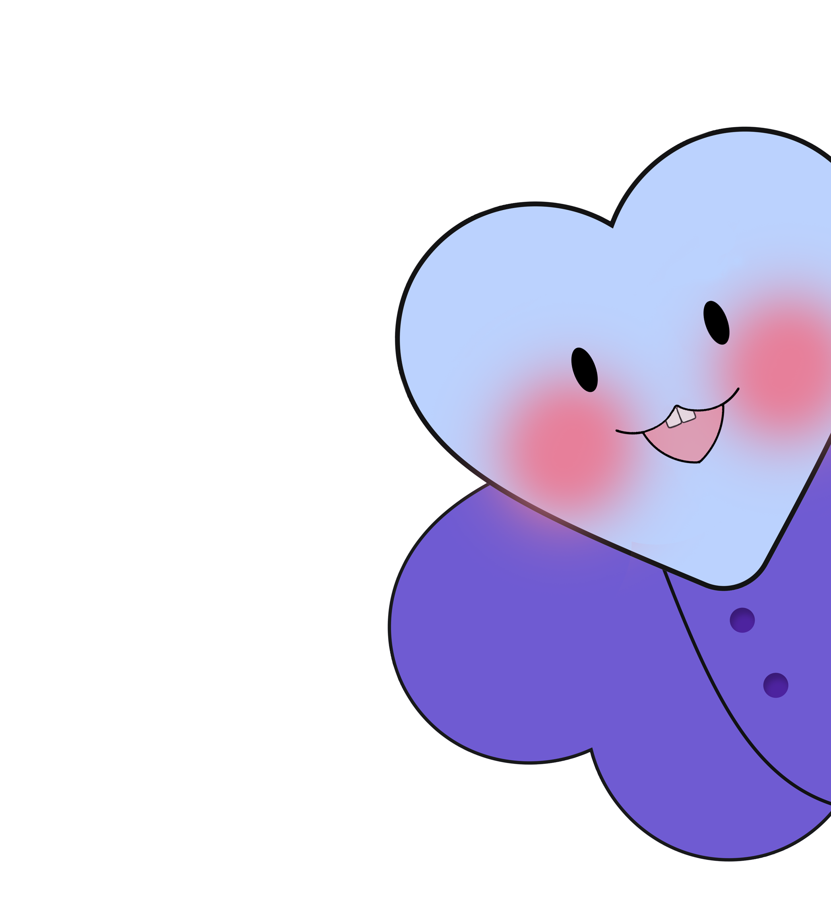

💬 커플 필수 대화 8주제
헤어지는 커플 90%가
안 하는 질문들
사이 좋을 때, 데이트하듯 편하게 물어봐요 · by 피노
헤어지는 커플의 90%는
감정이나 호감만으로 만남을 이어가다,
결국 해결되지 않은 가치관의 차이로 다퉈요.
이 질문들은 "우리가 얼마나 잘 맞는지 채점하자"가 아니에요.
싸우면서 꺼낼 주제를, 사이 좋을 때 미리 알아가자는 거예요.
"이 사람이 좋은가?"를 넘어
"우리가 평생 함께 갈 수 있는 팀인가?"를 확인하는 거죠.
— 40년간의 커플 연구, John Gottman의 '8 Dates' 기반
— 피노 @its_.pino
#1
신뢰와 헌신
서로를 향한 불변의 믿음을 확인하고 단단한 미래를 약속하는 질문들이에요.
◆너에게 '연인 간의 충성심'은 어디까지야?
◆내가 너에게 최고의 안전지대가 되어주고 있다고 느껴?
◆서로에게 가장 확신을 갖게 된 순간은 언제였어?
◆관계가 힘들어질 때, 우리를 묶어줄 가장 큰 힘은 뭐라고 생각해?
#2
갈등 관리
다툼의 순간에도 상처 주지 않고 더 현명하게 풀어가기 위한 질문들이에요.
◆어릴 적 너희 집은 싸움이 났을 때 어떻게 해결했어?
◆화가 났을 때 너만의 '쿨다운(식히는 시간)' 방식은 뭐야?
◆우리가 크게 싸웠을 때, 내가 어떻게 해주면 마음이 풀려?
◆서로 의견이 안 좁혀질 때, 우리가 만들어갈 타협의 규칙은 뭐야?
#3
친밀감
서로의 은밀한 취향과 욕구를 솔직하게 터놓고 더 깊어지는 질문들이에요.
◆내가 몰랐던 네 안의 또 다른 본능이나 욕구가 있다면 솔직히 뭐야?
◆관계도 익숙해져서 권태기 조짐이 보일 때, 다시 불태울 너만의 치트키가 있어?
◆스킨십할 때 "이것만큼은 절대 싫다" 하거나 분위기를 깨는 행동이 있다면?
◆너를 단번에 녹여버리는 너만의 결정적인 스킨십이나 애정 표현이 있어?
#4
일과 재정
현실적인 돈 문제와 각자의 커리어 방향성을 솔직하게 맞추는 질문들이에요.
◆어릴 때 '돈'은 너에게 불안이었어, 아니면 풍요였어?
◆소비할 때 가장 아깝지 않은 분야와 가장 아까운 분야는?
◆우리가 함께 살게 된다면 돈 관리는 어떻게 분담하는 게 이상적일까?
◆커리어적 성공과 삶의 균형(워라밸) 중 너의 우선순위는 뭐야?
#5
가족과 양육
서로의 가족을 이해하고 만들어갈 미래의 가정을 그려보는 질문들이에요.
◆너희 부모님의 관계 중 '닮고 싶은 점'과 '닮기 싫은 점'은 뭐야?
◆명절이나 집안 행사 때 서로의 가족을 챙기는 기준은 어디까지일까?
◆(자녀 계획이 있다면) 아이를 키울 때 가장 중요하게 가르치고 싶은 가치는?
◆양가 부모님과의 관계에서 우리가 서로를 어떻게 보호해 주면 좋을까?
🏔 SHERPA · 베타테스터 모집중
이런 대화, 혼자 꺼내기
어렵진 않았어요?
SHERPA는 AI가 관계 심리학 기반으로 두 사람의 대화를 도와주는 연애 앱이에요.
관계 진단부터 이런 깊은 대화까지, 어색하지 않게 이어갈 수 있도록요.
지금 베타테스터를 모집하고 있어요. 가장 먼저 써보고 싶다면 아래로요 👇

#6
놀이와 즐거움
함께할 때 가장 즐겁고 매일이 재미있어지는 우리만의 합을 찾는 질문들이에요.
◆너에게 '완벽한 휴일/휴가'는 어떤 모습이야?
◆같이 꼭 해보고 싶은 버킷리스트나 새로운 도전이 있어?
◆한 명은 쉬고 싶고 한 명은 나가 놀고 싶을 때 어떻게 타협할까?
◆일상의 소소한 재미를 유지하기 위해 우리가 매주 할 수 있는 루틴은?
#7
꿈과 성장
각자 개인적인 목표와 성장을 어떻게 응원할지 이야기하는 질문들이에요.
◆5년 뒤, 10년 뒤 네가 꿈꾸는 너 자신의 모습은 뭐야?
◆네 꿈을 이루기 위해 내가 어떤 조력자가 되어주면 좋겠어?
◆서로의 개인적인 성장(자기계발/커리어)을 위해 얼마나 시간을 배려해 줄 수 있어?
◆내 꿈과 너의 꿈이 충돌할 때 우리는 어떤 순서로 우선순위를 정할까?
#8
가치와 신념
동반자로서 같은 방향을 보고 걸어갈 수 있는지 확인하는 질문들이에요.
◆네 인생 전체를 통틀어 가장 중요하게 생각하는 핵심 가치 3가지는?
◆종교, 정치, 혹은 삶의 철학에서 네가 절대 포기할 수 없는 신념은?
◆'잘 산 인생'이란 어떤 인생이라고 생각해?
◆우리 둘만의 특별한 기념일이나 가치관을 담은 리추얼(의식)을 만든다면?
✨ 은밀한 대화 팁
이 질문들은 단순한 호기심 채우기가 아니에요. 상대방의 답변을 들을 때 "왜 그렇게 생각해?"라는 질문을 이어가며 그 사람의 생각 이면에 있는 '배경과 가치관'을 이해하는 것이 진짜 친밀감의 핵심이에요.
📌 좋아하는 사람, 혹은 지금 내 옆에 있는 연인에게 이 글을 공유하고 오늘 밤 하나만 슬쩍 물어보세요 🫶